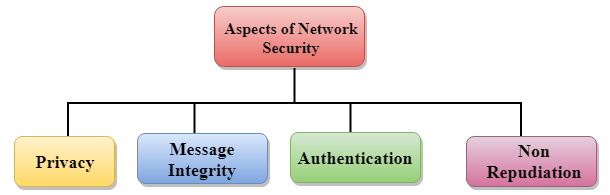
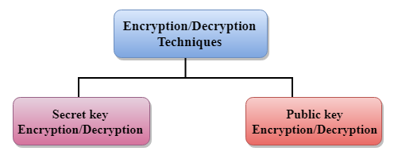
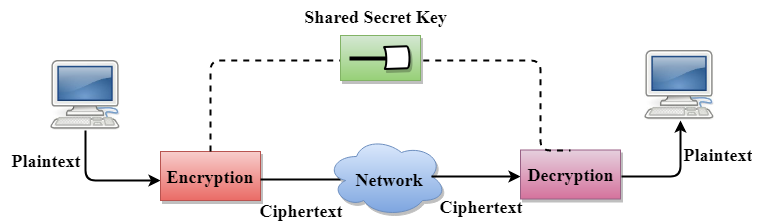
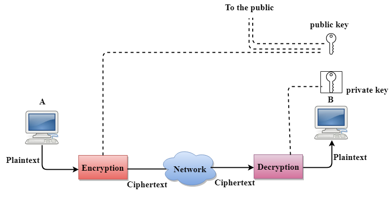

Computer Network Security
Computer network security consists of measures taken by business or some organizations to monitor and prevent unauthorized access from the outside attackers.
Different approaches to computer network security management have different requirements depending on the size of the computer network. For example, a home office requires basic network security while large businesses require high maintenance to prevent the network from malicious attacks.
Network Administrator controls access to the data and software on the network. A network administrator assigns the user ID and password to the authorized person.
Aspects of Network Security:
Following are the desirable properties to achieve secure communication:

- Privacy: Privacy means both the sender and the receiver expects confidentiality. The transmitted message should be sent only to the intended receiver while the message should be opaque for other users. Only the sender and receiver should be able to understand the transmitted message as eavesdroppers can intercept the message. Therefore, there is a requirement to encrypt the message so that the message cannot be intercepted. This aspect of confidentiality is commonly used to achieve secure communication.
- Message Integrity: Data integrity means that the data must arrive at the receiver exactly as it was sent. There must be no changes in the data content during transmission, either maliciously or accident, in a transit. As there are more and more monetary exchanges over the internet, data integrity is more crucial. The data integrity must be preserved for secure communication.
- End-point authentication: Authentication means that the receiver is sure of the sender?s identity, i.e., no imposter has sent the message.
- Non-Repudiation: Non-Repudiation means that the receiver must be able to prove that the received message has come from a specific sender. The sender must not deny sending a message that he or she send. The burden of proving the identity comes on the receiver. For example, if a customer sends a request to transfer the money from one account to another account, then the bank must have a proof that the customer has requested for the transaction.
Privacy
The concept of how to achieve privacy has not been changed for thousands of years: the message cannot be encrypted. The message must be rendered as opaque to all the unauthorized parties. A good encryption/decryption technique is used to achieve privacy to some extent. This technique ensures that the eavesdropper cannot understand the contents of the message.
Encryption/Decryption
Encryption: Encryption means that the sender converts the original information into another form and sends the unintelligible message over the network.
Decryption Decryption reverses the Encryption process in order to transform the message back to the original form.
The data which is to be encrypted at the sender site is known as plaintext, and the encrypted data is known as ciphertext. The data is decrypted at the receiver site.
There are two types of Encryption/Decryption techniques:
- Privacy with secret key Encryption/Decryption
- Privacy with public key Encryption/Decryption

Secret Key Encryption/Decryption technique

- In Secret Key Encryption/Decryption technique, the same key is used by both the parties, i.e., the sender and receiver.
- The sender uses the secret key and encryption algorithm to encrypt the data; the receiver uses this key and decryption algorithm to decrypt the data.
- In Secret Key Encryption/Decryption technique, the algorithm used for encryption is the inverse of the algorithm used for decryption. It means that if the encryption algorithm uses a combination of addition and multiplication, then the decryption algorithm uses a combination of subtraction and division.
- The secret key encryption algorithm is also known as symmetric encryption algorithm because the same secret key is used in bidirectional communication.
- In secret key encryption/decryption algorithm, the secret code is used by the computer to encrypt the information before it is sent over the network to another computer.
- The secret key requires that we should know which computers are talking to each other so that we can install the key on each computer
Advantage
Efficient: The secret key algorithms are more efficient as it takes less time to encrypt the message than to encrypt the message by using a public key encryption algorithm. The reason for this is that the size of the key is small. Due to this reason, Secret Key Algorithms are mainly used for encryption and decryption.
Disadvantages of Secret Key Encryption
The Secret Key Encryption/Decryption has the following disadvantages:
- Each pair of users must have a secret key. If the number of people wants to use this method in the world is N, then there are N(N-1)/2 secret keys. For example, for one million people, then there are half billion secret keys.
- The distribution of keys among different parties can be very difficult. This problem can be resolved by combining the Secret Key Encryption/Decryption with the Public Key Encryption/Decryption algorithm.
Public Key Encryption/Decryption technique
- There are two keys in public key encryption: a private key and a public key.
- The private key is given to the receiver while the public key is provided to the public.

In the above figure, we see that A is sending the message to user B. 'A' uses the public key to encrypt the data while 'B' uses the private key to decrypt the data.
- In public key Encryption/Decryption, the public key used by the sender is different from the private key used by the receiver.
- The public key is available to the public while the private key is kept by each individual.
- The most commonly used public key algorithm is known as RSA.
Advantages of Public Key Encryption
- The main restriction of private key encryption is the sharing of a secret key. A third party cannot use this key. In public key encryption, each entity creates a pair of keys, and they keep the private one and distribute the public key.
- The number of keys in public key encryption is reduced tremendously. For example, for one million users to communicate, only two million keys are required, not a half-billion keys as in the case of secret key encryption.
Disadvantages of Public Key Encryption
- Speed: One of the major disadvantage of the public-key encryption is that it is slower than secret-key encryption. In secret key encryption, a single shared key is used to encrypt and decrypt the message which speeds up the process while in public key encryption, different two keys are used, both related to each other by a complex mathematical process. Therefore, we can say that encryption and decryption take more time in public key encryption.
- Authentication: A public key encryption does not have a built-in authentication. Without authentication, the message can be interpreted or intercepted without the user's knowledge.
- Inefficient: The main disadvantage of the public key is its complexity. If we want the method to be effective, large numbers are needed. But in public key encryption, converting the plaintext into ciphertext using long keys takes a lot of time. Therefore, the public key encryption algorithms are efficient for short messages not for long messages.